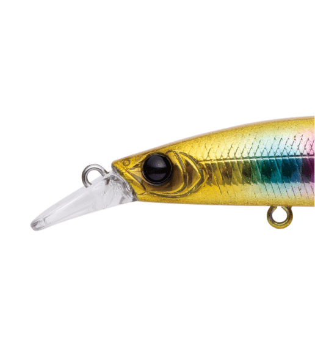
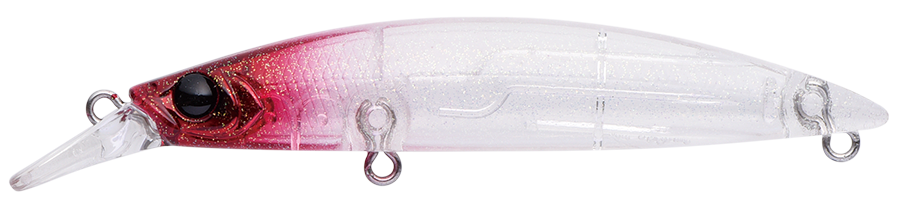
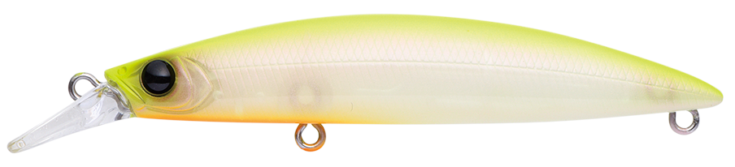
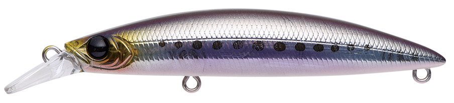
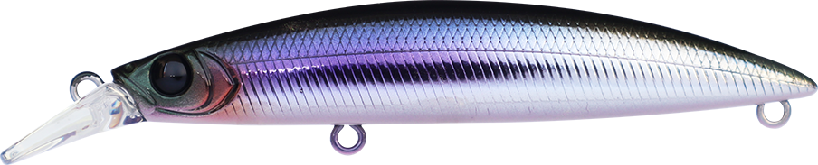
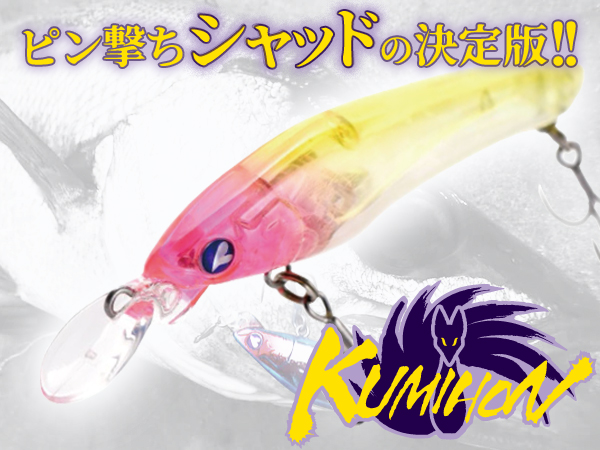
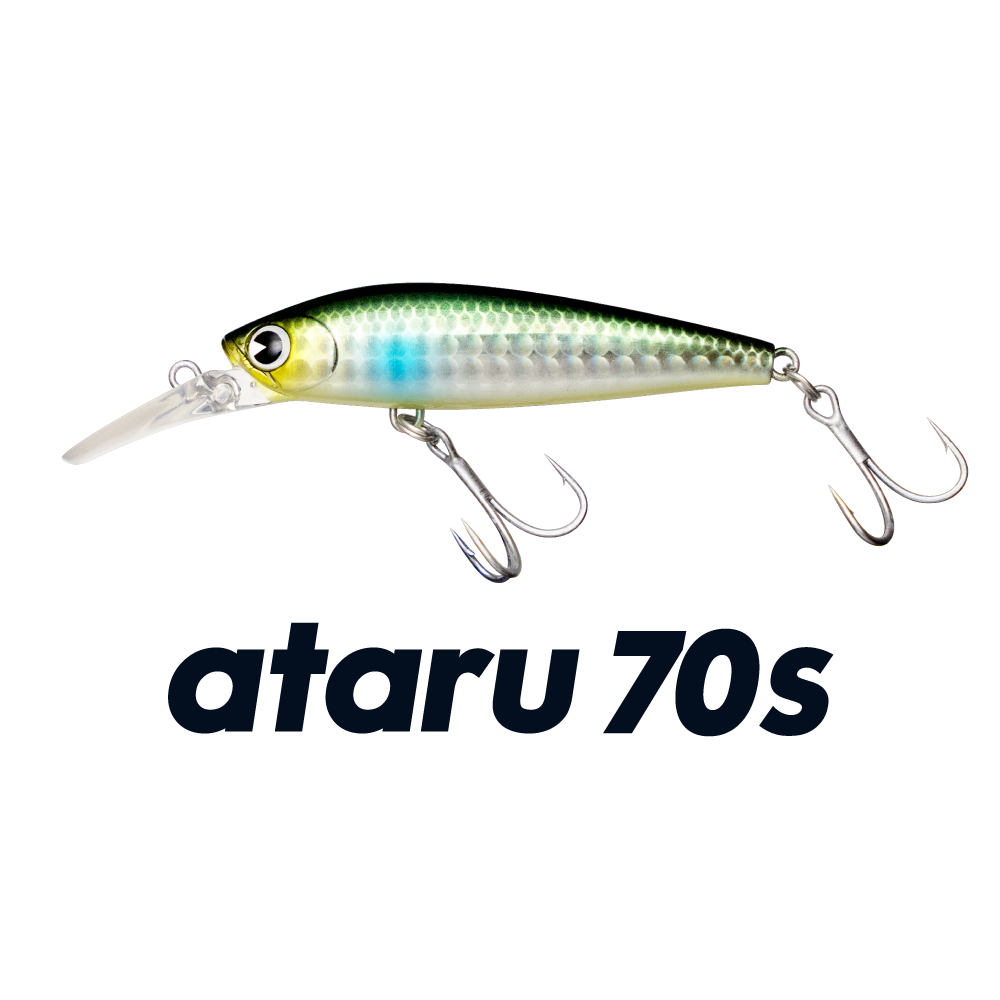
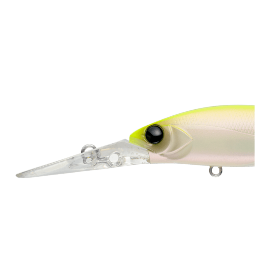

ドーバー82S
（DOVER82S）
ドーバー82S（DOVER82S）はAPIA（アピア）のシンキングミノーです。
汎用性の高さを謳う「DOVER」シリーズの中でも、特にピンポイント攻略に秀でた“食わせごろサイズ”のモデル。キャスト時の直進性に優れていて至近距離のスポットシューティングも得意で、重心移動を搭載しながら泳ぎ出しが早く、ストラクチャーにタイトに付く魚にも効率よくアピールできます。

画像出典:APIA公式HP
スペック
- メーカー
- APIA（アピア）
- タイプ
- シンキング（ミノー）
- 全長
- 82mm
- 自重
- 10g
- フック
- #6×2
- アクション
- ウォブンロール
- ターゲット
- シーバス
- 価格
- 1,705円（税込）
▼今すぐチェック
ドーバー82Sの特徴
小場所・壁際・ボートのバース打ちで頼れる、近距離戦のパイロットルアー
-
直進性に優れ、至近距離のピン撃ちが得意
キャスト時の直進性に優れ、82mm・10gながら予想を上回る飛距離が出る。飛行姿勢が安定しているので、キャストミスが許されないピン撃ちでも安心して投入できる。
-
重心移動でも泳ぎ出しが早い
重心移動を搭載しながら泳ぎ出しが早く、着水から素早く水をつかむ。壁打ちやボートからのバース打ちなど、着水直後が勝負の場面で優位になる。
-
オフセットリアフックアイと根掛かり回避能力
ストラクチャーにぶつけても破損しにくいオフセット形状のリアフックアイを採用。長めのリップと前傾のスイム姿勢でボトムノック時の根掛かり回避能力も高く、積極的にボトムを攻められる。
ドーバー82Sの使い方
基本はただ巻き。リップが水を噛み過ぎない軽快な引き抵抗で、ロッドアクションにも機敏に反応します。
リトリーブ中にトゥイッチやジャークを入れて、食わせの間を作るのも有効。ロッドを小さく弾くトゥイッチでは機敏にヒラを打ち、ジャークでは左右に飛ばすような使い方もできます。
ドーバー82Sの得意な状況
小規模河川の護岸際や流れ込み、シャローの乱杭周り、ボートでのストラクチャー撃ちなど、近距離のピンスポットを攻める状況が最大の出番。
垂直護岸の都市型河川で魚が足元に付いているときの壁打ちにも向いています。約80mmのボディは通年で使いやすく、ベイトの種類を選ばず投入できます。
ワンポイント
壁打ちでは、壁と平行にキャストして着水直後から泳がせるのがコツ。泳ぎ出しの早さを活かして、壁際を長く引けるコースを選びましょう。
ボトムが近い場所では、前傾のスイム姿勢を活かしてボトムを軽くノックさせながら引くと、根掛かりを抑えつつリアクションバイトを誘えます。
ドーバーシリーズの使い分け
| モデル | 全長／自重 | 得意な場面 |
|---|---|---|
| ドーバー46SS | 46mm／2.3g | スローシンキング。小型ベイトやライトゲームに |
| ドーバー70SS | 70mm／10g | スローシンキング・〜60cm |
| ドーバー70F シャローランナー | 70mm／8.5g | フローティング・0〜30cm。シャロー攻略に |
| ドーバー82S | 82mm／10g | シンキング。近距離のピン撃ちに（本記事のモデル） |
| ドーバー99F／99S | 99mm／15g・17g | フローティング（60〜90cm）／シンキング |
| ドーバー120F リーヴァ | 120mm／18g | フローティング・60cm。オールラウンドに |
ドーバーは「誰が投げても同じように泳ぐ」汎用性の高いミノーシリーズ。サイズとタイプが豊富なので、フィールドとベイトに合わせて選べます。
人気カラー
ドーバー82Sは全15色展開。シーバス狙いでオススメのカラーを厳選して紹介します。

レッドヘッドゴーストレッドヘッドのゴースト系。濁りやナイトでも使いやすい。

チャートバックパールチャートの背中とパールのボディで視認性・アピールとも高い定番。

イワシイワシパターンに合わせたナチュラル系。

パニックカタクチカタクチイワシを意識したベイトカラー。
画像出典:APIA公式HP
ドーバー82Sに似ているルアー
-

クミホン70S ブルーブルー 詳細はこちら＞全長70mm・自重9gのピン撃ちシャッド。壁際や橋脚などのピンスポット攻略というコンセプトがドーバー82Sと近い。
-

アタル70S（ataru 70S） ima 詳細はこちら＞全長70mm・自重11gのシンキングシャッド。レンジ50〜180cmで、ストラクチャーからオープンエリアまで探りたいときに。
-

マイヨール80S アピア 詳細はこちら＞全長80mm・自重15gの急速潜行ディープダイバー。最大2.5mと、ボートからより深いストラクチャーを攻めたいときの持ち替えに。